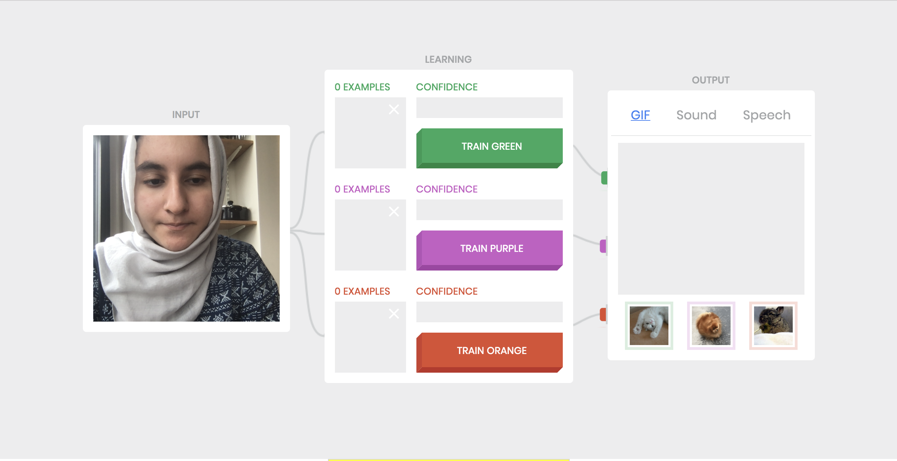
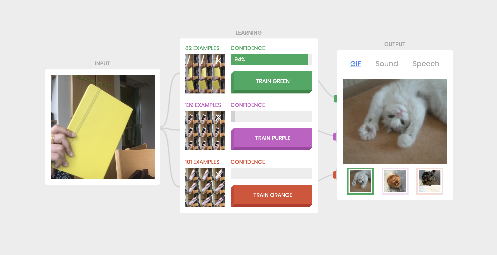
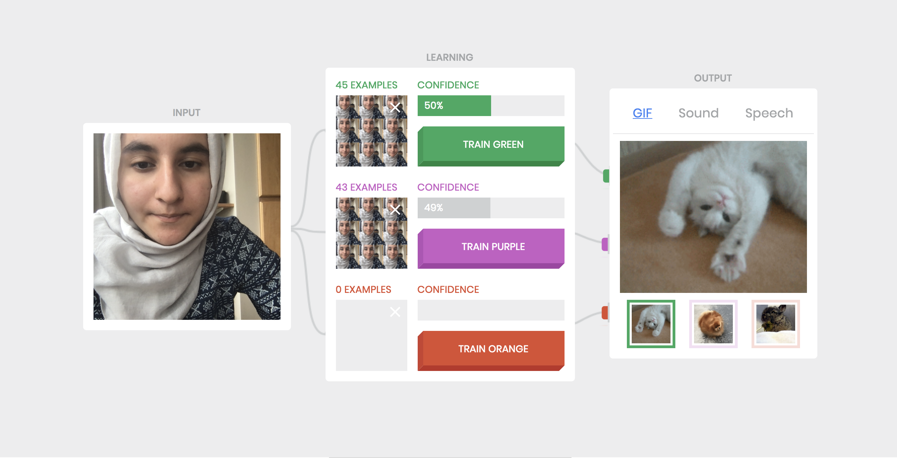
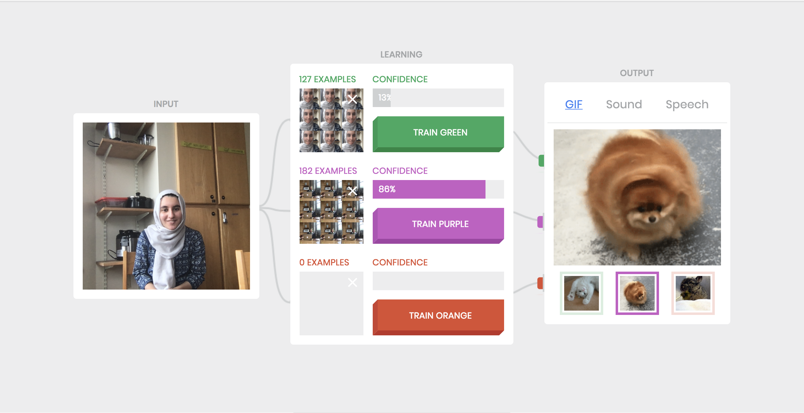
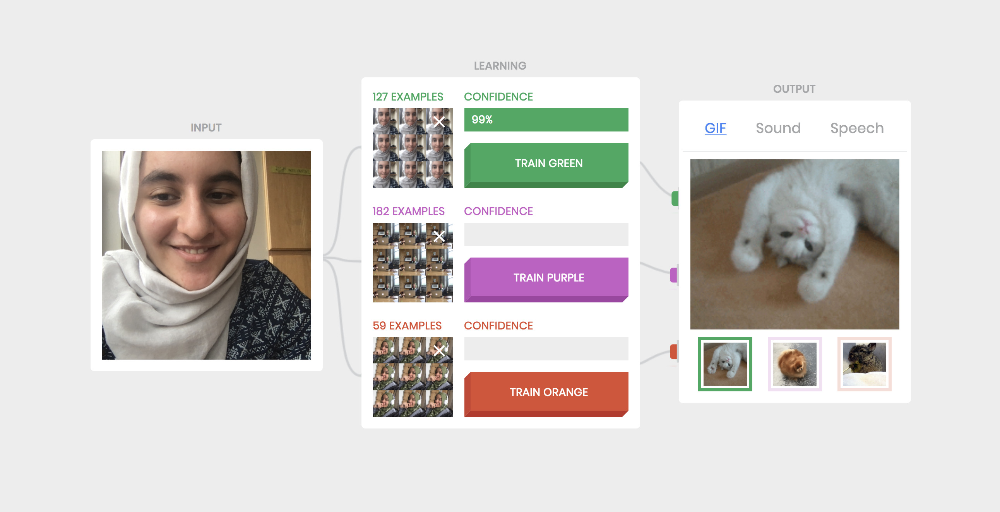

Assignment 1
Due Monday September 10th at 10 AM
Build Teachable Machine on Your Computer

Train Some Classes
For this assignment, we were instructed to run some experiments with a partner and note down our observations.
Task 1: We trained the network with a series of our facial expressions and observed that the network can tell the difference between the two faces with a confidence of greater than 95%.

Task 2: I trained the network on various inanimate objects, including my phone, notebook, and water bottle and observed a confidence of minimum 95%. However as I take the object further away from the camera, it begins to misclassify. For example, the bottle is mistaken to be the phone at a confidence level of approximately 75% due to the similarity of color between the two objects.

Task 3: I trained the network on two different classes with the same image set; specifically my two classes were my face in a fixed facial expression. In this case, I observed the confidence shift between the two classes with each having approx 50%.
Task 4: With the first class defined as myself two different people having Expression A and the second class defined as two people having Expression B, the classifier was able to distinguish between the two facial expressions at a confidence of 90% as well as the two faces.

>
Task 5: With the first class defined as person A very close and the second class defined as person B very far, the network was very confused and would sometimes misclassify person A as person B and it could be argued that it was training based on distance. I also trained the network with a 3rd class of person B close to the camera, observing that the network could now identify faces with a confidence of 95%.
Task 6: The Russian Tank Parable is used to illustrate when a network learns based on a different feature in the image rather than the one you assume - in this scenario, the images were trained on the classes cloudy/sunny rather than trees/camouflaged tanks.
Some examples to illustrate this include:
Example #1: First class defined as a pencil, Second Class defined as a pen. The intended classification is the object but the real classification could be the background of the object (kitchen versus classroom)
How Teachable Machine Works
Examining the Confidence Levels
Limiting the number of training examples per class
Further Explorations
Readings I Found Useful